Harry Potter Tournée
 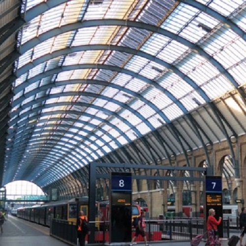
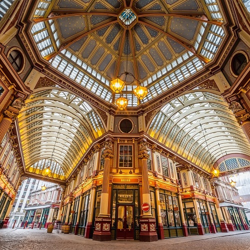
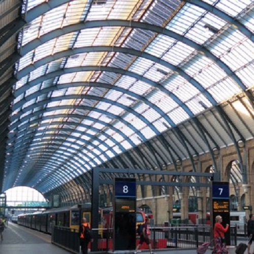
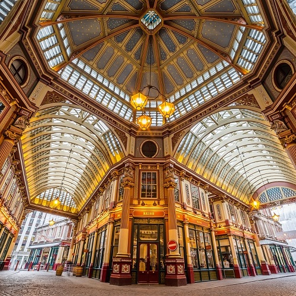
Cette visite vous invite à pénétrer dans le monde merveilleux de Harry Potter.
Non seulement les célèbres Harriott Studios, mais aussi les lieux de tournage extérieurs avec un excellent guide.
Explorez les richesses naturelles et les paysages urbains uniques de la Grande-Bretagne avec d'autres amateurs de Harry Potter !
Guidé

Réservations d'hôtel
Famille
L'histoire Tournée
 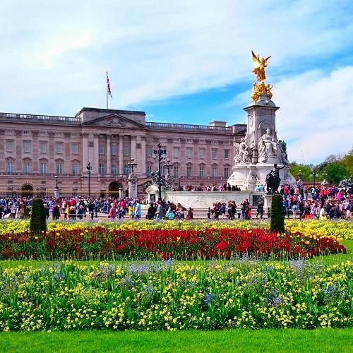
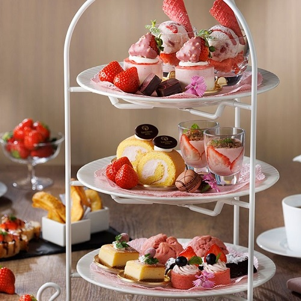
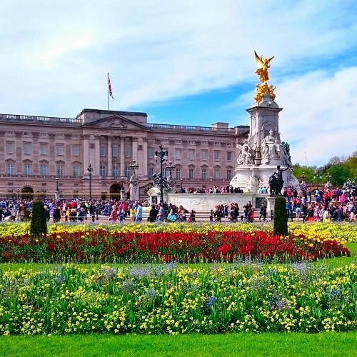
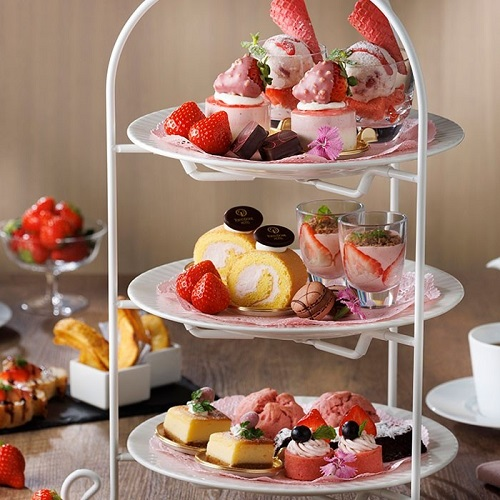
À propos de cette visite, vous profiterez de vues spectaculaires sur Londres.
Big Ben et Buckingham Palace vous ramèneront au XIXe siècle.
Il s'agit de l'itinéraire le plus courant pour visiter les sites touristiques les plus célèbres du monde.
Choisissez ce circuit et profitez de votre voyage !
Guidé

Réservations d'hôtel
Adulte
Nature Tournée
 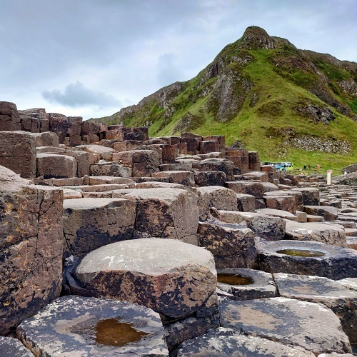
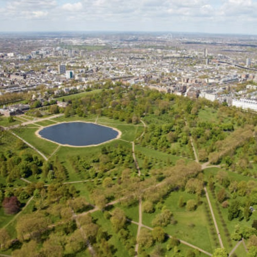
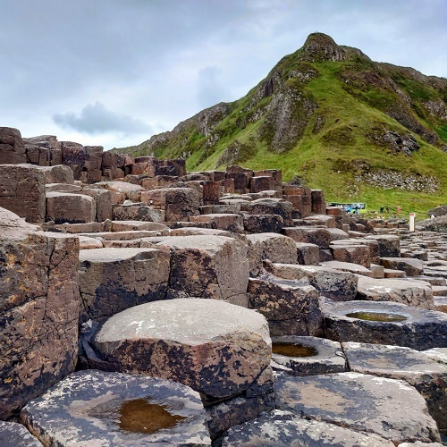
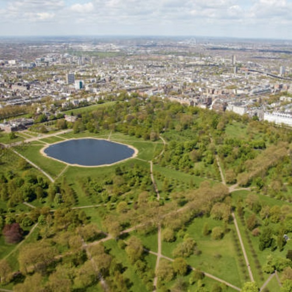
Explorez les richesses naturelles et les paysages urbains uniques de la Grande-Bretagne avec d'autres amateurs de Harry Potter !
En parcourant les différentes îles de Grande-Bretagne, vous rencontrerez de nombreuses espèces animales et végétales, nature et d'espèces animales.
Au cours de votre voyage, vous aurez également l'occasion de goûter à quelques-unes des délicieuses spécialités de la nature britannique.
Avec un guide qui est fier d'être un expert de la nature britannique, c'est une visite que vous ne voudrez pas manquer. manquer !
Guidé

Réservations d'hôtel

Croisière
- Les procédures d'immigration sont strictes au Royaume-Uni. Préparez vos documents pour ce qui vous sera demandé. Votre billet de retour, l'emplacement de l'hôtel, l'endroit où vous séjournerez, les dates de voyage si vous les avez.
- Emportez une veste déperlante avec capuche. Comme en montagne, le temps peut changer rapidement et facilement en peu de temps.
- Si le ticket de caisse indique "frais de service non compris", un pourboire est exigé. Vous pouvez laisser un pourboire d'environ 10 % du prix.
- Au Royaume-Uni, il est interdit de fumer dans les gares, sur les quais et aux arrêts de bus. En outre, veuillez noter que dans certaines zones, il est interdit de boire à l'extérieur.
- La nourriture britannique est réputée pour être mauvaise. Il faut savoir que certains plats britanniques sont servis avec leur propre sel, poivre ou sauce.
- Les restaurants sont extrêmement chers, donc si vous voulez maintenir des prix bas, vous devriez manger dans les bars et les marchés plutôt que dans les restaurants.